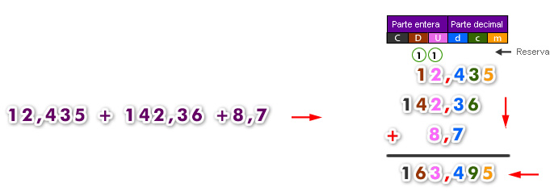
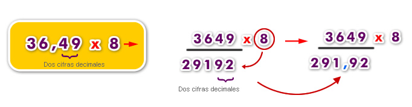

El sistema métrico decimal en un conjunto de medidas o de unidades en el cual los múltiplos y submúltiplos de una unidad de medida están relacionadas entre ellas. Para comprender mejor lo que es un sistema de medidas habría que saber cuáles unidades son las que se van a medir o a calcular, Hay que tomar en cuenta que las magnitudes
No son pocas las ocasiones en las que se puede utilizar el término área para hacer referencia a la superficie, pero no tienen absolutamente nada que ver el uno con el otro. No bebería existir confusión alguna entre ambos conceptos debido a que el área es la magnitud métrica asociada al concepto de superficie, por lo que quedan las diferencias bien establecidas.
Veamos un ejemplo de resta e incluyamos los ceros que corresponda:

Para multiplicar números decimales, se multiplican como si fueran números naturales y, en el producto, se separan con una coma, contando desde la derecha, tantas cifras decimales como tengan en total los dos factores.
Para multiplicar un número decimal por un número natural debes multiplicar prescindiendo de la coma y luego en el resultado o producto se le agrega la coma comenzando a contar desde la derecha tantas cifras como decimales había:
